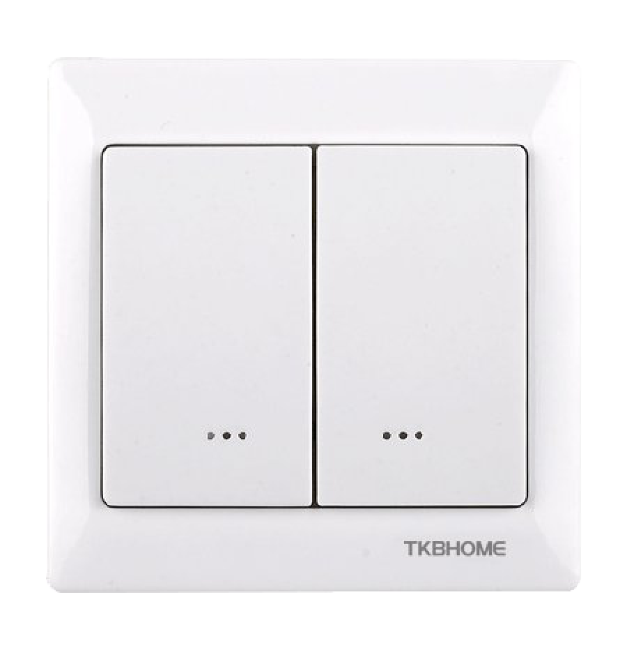

TKB_TZ65-D
Firmware Version : 1.3 |
 |
KurzinfoA Dieses Gerät ist ein Z-Wave-Aktor. Um das Gerät in das Z-Wave-Netz einzubinden, muss zunächst der Controller in den Inklusion-Modus gesetzt werden. Anschließend drücken Sie den oberen oder unteren Teil der Schaltwippe. Der TZ65-D ist nun in das Netz inkludiert. Weitergehende Informationen finden sich in den jeweiligen Abschnitten dieses Handbuches. |
Produktbeschreibung
Der TZ65-D Zweifach-Wandschalter schaltet angeschlossene Leuchten und wird entweder über die Schaltfläche oder drahtlos über das Z-Wave-Netz gesteuert. Das Gerät wird über eine Fernbedienung oder eine PC-Software in ein Z-Wave Netz eingebunden und kann dann selbst - zusätzlich zur lokal angeschlossenen Last - bis zu drei weitere Gruppen von Z-Wave-Geräten steuern, die mit dem Wandschalter assoziiert werden. Die linke Schaltwippe steuert die lokale Last, während die rechte Schaltwippe zur Steuerung anderer Z-Wave-Geräte zur Verfügung steht. Die Steuerung erfolgt durch ein- oder zweifaches Drücken der jeweiligen Schaltflächen. Das Gerät wird mit 230 V Spannung versorgt und benötigt daher zur Installation eine spannungsversorgte Unterputzdose.
Das Gerät wird komplett vormontiert mit einem Einfach-Montagerahmen geliefert. Der Unterputzeinsatz hat keine Halteklemmen, so dass in der Unterputzdose entsprechende Gewinde zur Verschraubung vorhanden sein müssen. Das Gerät ist für ein Dreileitersystem vorgesehen, d.h. es muss zur Installation ein Neutralleiter (blau) vorhanden sein.
Installationsanleitung
Der TZ65-D Zweifach-Wandschalter benötigt zur Installation eine mit 230 V versorgte Unterputzdose. Er passt nicht in deutsche Wanddosen mit einem Durchmesser von 60 mm.
- Entfernen Sie als ersten Schritt die Schaltwippe (z.B. mit Hilfe eines kleinen Schraubenziehers).
- Anschließend entfernen Sie die vier Schrauben aus dem Haltering, um den Rahmen von der Montageplatte abzunehmen. Achten Sie bei der Entnahme unbedingt darauf, nicht die Antenne zu verbiegen oder zu beschädigen.
- Schließen Sie das Gerät, wie in der Abbildung dargestellt, an. Die Anschlussklemmen N und L werden direkt mit den Zuleitungen des Stromnetzes verbunden. Der Kontakt L' dient dem Lastausgang und wird mit dem elektrischen Verbraucher verbunden.
- Ist der Wandschaler elektrisch angeschlossen, kann dieser nun in der Wand installiert werden.
- Befestigen Sie den Rahmen wieder mit den vier Schrauben auf dem Haltering. Bitte beachten Sie die Einbaurichtung (Pfeil nach oben auf der Montageplatte), damit später der Druck auf den oberen Teil der Schaltwippe ein EIN-Signal und der Druck auf den unteren Teil der Schaltwippe ein AUS-Signal hervorruft.
- Montieren Sie die Schaltwippe wieder, indem Sie sie auf den Rahmen drücken. Achten Sie dabei darauf, dass die LED-Anzeige in der richtigen Ausrichtung (Prägung "Bottom") ist.
Die untenstehende Abbildung zeigt die elektrische Verschaltung des Aktors.

Verhalten des Gerätes im Z-Wave Netz
I Im Auslieferungszustand ist das Gerät mit keinem Z-Wave-Netz verbunden. Damit es mit anderen Z-Wave Geräten kommunizieren kann, muss es in ein bestehendes Z-Wave Netz eingebunden werden. Dieser Prozess wird bei Z-Wave Inklusion genannt. Geräte können Netzwerke auch wieder verlassen. Dieser Prozess heißt bei Z-Wave Exklusion. Beide Prozesse werden von einem Controller gestartet, der dazu in einen Inklusion- bzw. Exklusion-Modus geschaltet werden muss. Das Handbuch des Controllers enthält Informationen, wie er in diese Modi zu schalten ist. Erst wenn der Controller des Z-Wave Netzes im Inclusion-Modus ist, können Geräte hinzugefügt werden. Das Verlassen des Netzes durch Exklusion führt zum Rücksetzen dieses Gerätes in den Auslieferungszustand.
Um das Gerät in das Z-Wave-Netz einzubinden, muss zunächst der Controller in den Inklusion-Modus gesetzt werden. Die Bestätigung der Inklusion an diesem Gerät erfolgt durch ein einmaliges Drücken auf den oberen oder unteren Teil der Schaltwippe.
Die Bestätigung der Exklusion erfolgt an diesem Gerät wie bei der Inklusion ebenfalls durch ein einmaliges Drücken auf den oberen oder unteren Teil der Schaltwippe.
Bedienung des Gerätes
Der TZ65-D kann andere Z-Wavegeräte steuern und wird über die Schaltwippen oder per Funk (Kommunikationmuster 1 und 4) geschaltet. Wenn der Schalteinsatz in der richtigen Orientierung eingebaut wurde, schaltet der Druck auf den oberen Wippenteil die Last ein und ein Druck auf den unteren Wippenteil schaltet die Last aus. Ein Drücken und Halten des Schalters ermöglicht das Dimmen und Aufhellen von Z-Wave Dimmern, wenn diese mit dem Gerät assoziiert sind.
Bedeutung der LED-Signale
- Die LED des TZ65-D leuchtet, wenn die angeschlossene Last aus ist. Auf diese Weise ist es möglich, den Schalter auch im Dunkeln zu finden. Dennoch ist es möglich, diese Einstellung entsprechend den Wünschen des Nutzers umzustellen, sodass die LED leuchtet, wenn die angeschlossene Last an ist.
- Die LED des TZ65-D flimmert, wenn Übertragungen zu seinen drei Gruppen vorgenommen werden. Dies kann ggf. geändert werden. Lesen Sie dazu unter "LED transmission indication".
Das Flimmern kann komplett ausgeschaltet werden (0), auf Flimmern während des gesamten Übertragungsprozesses eingestellt werden (1) oder auf ein Flimmern für 1 Sekunde, wenn es mit der Übertragung beginnt(2), umgestellt werden. In der Standardeinstellung des TZ65-D ist ein Flimmert für nur 1 Sekunde.
Assoziationen - wie werden andere Geräte gesteuert?
A Z-Wave Geräte können andere Geräte direkt steuern. Diese direkte Steuerung heißt in Z-Wave Assoziation. In den steuernden Geräten muss dazu die Geräte-ID des zu steuernden Gerätes hinterlegt werden. Dies erfolgt in sogenannten Assoziationsgruppen. Eine Assoziationsgruppe ist immer an ein Ereignis im steuernden Gerät gebunden (Tastendruck oder Auslösen eines Sensors). Bei Eintritt dieses Ereignisses wird an alle in einer Assoziationsgruppe hinterlegten Geräte ein Steuerkommando gesendet.
Assoziationsgruppen:
| 1 | Linke Schaltwippe Einfachklick (max. Anzahl Geräte: 5) |
| 2 | Rechte Schaltwippe Einfachklick (max. Anzahl Geräte: 5) |
| 3 | Rechte Schaltwippe Doppelklick (max. Anzahl Geräte: 5) |
| 4 | jede Schaltaktion (max. Anzahl Geräte: 5) |
Konfigurationseinstellungen
Z-Wave Produkte können direkt nach der Inklusion im Netz verwendet werden. Durch Konfigurationseinstellungen kann das Verhalten des Gerätes jedoch noch besser an die Anforderungen der Anwendung angepasst und zusätzliche Funktionen aktiviert werden.
WICHTIG: Manche Steuerungen erlauben nur die Konfiguration von vorzeichenbehafteten Werten zwischen -128 und 127. Um erforderliche Werte zwischen 128 und 255 zu programmieren, muss der gewünschte Wert minus 256 eingegeben werden. Beispiel: um einen Parameter auf einen Wert von 200 zu setzen, müsste der Wert 200-256 = -56 eingegeben werden, wenn nur positive Werte bis 128 akzeptiert werden. Bei Werten von 2 Byte Länge wird die gleiche Logik angewandt: Werte über 32768 werden als negative Werte angegeben
| Wert | Beschreibung |
|---|---|
| 0 | Ignorieren |
| 1 | Nicht ignorieren (Voreingestellt) |
| Wert | Beschreibung |
|---|---|
| 0 | ja (Voreingestellt) |
| 1 | nein |
| Wert | Beschreibung |
|---|---|
| 0 | LED blinkt bei Aktivität (Voreingestellt) |
| 1 | Nachtlicht aktiv |
| Wert | Beschreibung |
|---|---|
| 0 | Nein (Voreingestellt) |
| 1 | Ja |
| Wert | Beschreibung |
|---|---|
| 0 | Nein (Voreingestellt) |
| 1 | Ja |
| Wert | Beschreibung |
|---|---|
| 0 | Nein (Voreingestellt) |
| 1 | Ja |
| Wert | Beschreibung |
|---|---|
| 0 | kein Blinken (Voreingestellt) |
| 1 | Binkt immer solange Funk aktiv ist |
| 2 | Blinkt nur für eine Sekunde |
| Wert | Beschreibung |
|---|---|
| 1 — 255 | Interval (Voreingestellt 2) |
| Wert | Beschreibung |
|---|---|
| 0 | Nein |
| 1 | Ja (Voreingestellt) |
Technische Daten
| Stromversorgung | 230V |
| Schaltbare Lasten | bis 300 W |
| Schutzklasse | IP 20 |
| Z-Wave Frequenz | 868.42 MHz |
| Funkreichweite | |
| Explorer Frames | Ja |
| SDK | 4.54 |
| Geräteart | Slave with routing capabilities |
| Allgemeiner Z-Wave-Gerätetyp | Multilevel Switch |
| Spezieller Z-Wave-Gerätetyp | Multilevel Power Switch |
| Router | Ja |
| FLiRS | Nein |
| Firmware Version | 1.3 |